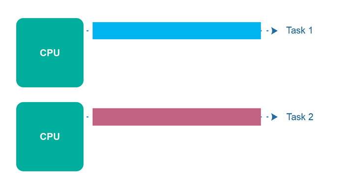
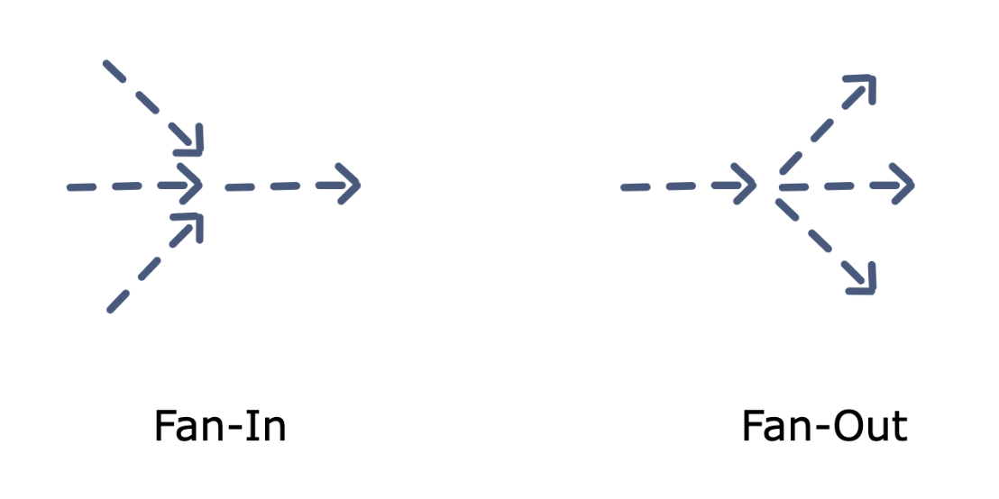

Goroutine
1. Concurrency vs Parallelism
Concurrency is when two or more tasks can start, run, and complete in overlapping time periods. It doesn't necessarily mean they'll ever both be running at the same instant.

Parallelism is when tasks literally run at the same time, e.g., on a multicore processor.

2. Data races and race conditions
Data races is a situation, in which at least two threads access a shared variable at the same time. At least one thread tries to modify the variable.
Race condition is a situation, in which the result of an operation depends on the interleaving of certain individual operations.

3. Deadlocks
What is a deadlock?
A deadlock occurs when all processes are blocked while waiting for each other and the program cannot proceed further.
Coffman conditions
There are four conditions, knows as the Coffman conditions that must be present simultaneously for a deadlock to occur:
- Mutual exclusion: A concurrent process holds at least one resource at any time making it non-sharable
- Hold and wait: A concurrent process holds a resource and is waiting for an additional resource
- No preemption: A resource held by a concurrent process cannot be taken away by the system. It can only be freed by the process holding it.
- Circle wait: A concurrent process must be waiting on a chain of other concurrent processes such that P1 is waiting on P2, P2 on P3 and so on, and there exists a Pn which is waiting for P1.
In order to prevent deadlocks, we need to make sure that at least one of the conditions stated above should not hold.
3. Starvation
Starvation describes a situation where a thread is unable to gain regular access to shared resources and is unable to make progress. This happens when shared resources are made unavailable for long periods by greedy threads.
For example, suppose an object provides a synchronized method that often takes a long time to return. If one thread invokes this method frequently, other threads that also need frequent synchronized access to the same object will often be blocked.
4. Goroutine
A goroutine is a lightweight thread managed by the Go runtime.
You can create a goroutine by using the following syntax
1 | |
The current goroutine evaluates the input parameters to the function which are executed in the new goroutine.
main() function is a goroutine which was invoked by the implicity created goroutine managed by Go runtime.
5. Channels
Channel is a pipe between goroutines to synchronize excution and communicate by sending/receiving data
1 | |
The datatype is the type of data that you will pass on your channel.
Eg:
1 | |
Sending on a channel
1 | |
Receiving on a channel
1 | |
By default, sends and receives block until the other side is ready. This allows goroutines to synchronize without explicit locks or condition variables.
Closing a channel
1 | |
A sender can close a channel to indicate that no more values will be sent. Receivers can test whether a channel has been closed by assigning a second parameter to the receive expression:
1 | |
ok is false if there are no more values to receive and the channel is closed.
The loop for i := range c receives values from the channel repeatedly until it is closed.
6. Buffered channels
Buffered channels are channels with a capacity/buffer. They can created with the following syntax:
1 | |
Sends to a buffered channel block only when the buffer is full. Receives block when the buffer is empty.
7. Select
The select statement lets a goroutine wait on multiple communication operations.
A select blocks until one of its cases can run, then it executes that case. It chooses one at random if multiple are ready.
1 2 3 4 5 6 | |
Default selection
The default case in a select is run if no other case is ready.
1 2 3 4 5 6 | |
Empty select
1 | |
The empty select will block forever as there is no case statement to execute.
It is similar to an empty for {} statement.
On most supported Go architectures, the empty select will yield CPU. An empty for-loop won't, i.e. it will "spin" on 100% CPU.
Select statement with timeout
Timeout in select can be achieved by using After() function of time package. Below is the signature of After() function.
1 | |
The After function waits for d duration to finish and then it returns the current time on a channel.
Example:
1 2 3 4 5 6 7 8 9 10 11 12 13 14 15 16 17 18 19 20 21 22 23 24 25 26 27 28 29 30 31 32 | |
8. WaitGroups
A WaitGroup blocks a program an waits for a set of goroutines to finish before moving to the next steps of excutions.
1 2 3 4 5 6 7 8 9 10 11 12 13 14 15 16 17 18 19 20 21 22 23 24 25 | |
9. Mutex
Critical section
When a program runs concurrently, the parts of code which modify shared resources should not be accessed by multiple Goroutines at the same time. This section of code that modifies shared resources is called critical section
What is mutex
A mutex prevents other processes from entering a critical section of data while a process occupies it.
Go's standard library provides mutual exclusion with sync.Mutex and its two methods:
LockUnlock
RWMutex
A RWMutex is a reader/writer mutual exclusion lock. The lock can be held by an arbitrary number of readers or a single writer.
Lock: locks for writing. If the lock is already locked for reading or writing, Lock blocks until the lock is available.Unlock: unlocks writing lock.RLock: locks for reading. It should not be used for recursive read locking; a blocked Lock call excludes new readers from acquiring the lock.RUnlock: RUnlock undoes a single RLock call; it does not affect other simultaneous readers.
9. Once, Pool, Cond
Once
Once is an object that performs an action only once.
Implement a singleton pattern in Go:
1 2 3 4 5 6 7 8 9 10 11 12 13 14 15 16 17 18 19 20 21 22 23 24 25 26 27 28 29 30 31 32 33 34 35 36 37 | |
Pool
A Pool is a set of temporary objects that may be individually saved and retrieved. Pool's purpose is to cache allocated but unused items for later reuse, relieving pressure on the garbage collector.
The public methods are:
Get() interface{}to retrieve an elementPut(interface{})to add an element
1 2 3 4 5 6 7 | |
When shall we use sync.Pool? There are two use-cases:
- The first one is when we have to reuse shared and long-live objects like a DB connection for example.
- The second one is to optimize memory allocation.
Eg:
1 2 3 4 5 6 7 8 9 10 11 12 13 14 | |
Note: Since a pointer can be put into the interface value returned by Get() without any allocation, it is preferable to put pointers than structures in the pool.
Cond
Cond implements a condition variable, a rendezvous point for goroutines waiting for or announcing the occurrence of an event.
Creating a sync.Cond requires a sync.Locker object (either a sync.Mutex or a sync.RWMutex):
1 | |
10. Concurrency patterns
Generator function
Generator Pattern is used to generate a sequence of values which is used to produce some output. This pattern is widely used to introduce parallelism into loops. This allows the consumer of the data produced by the generator to run in parallel when the generator function is busy computing the next value.
1 2 3 4 5 6 7 8 9 10 11 12 13 14 15 16 17 18 19 20 21 22 23 24 | |
Futures
A Future indicates any data that is needed in future but its computation can be started in parallel so that it can be fetched from the background when needed.
Example:
1 2 3 4 5 6 7 8 9 10 11 12 13 14 15 16 17 18 19 20 21 22 23 24 25 26 27 28 29 30 31 32 33 34 35 36 37 38 39 40 | |
The actual http request is done asynchronously in a goroutine. The main function can continue doing other things. When the result is needed, we read the result from the channel.
Fan-in, Fan-out
Fan-in Fan-out is a way of Multiplexing and Demultiplexing in golang.
- Fan-in refers to processing multiple input data and combining into a single entity.
- Fan-out is the exact opposite, dividing the data into multiple smaller chunks, distributing the work amongst a group of workers to parallelize CPU use and I/O.

For example we have a following program:
1 2 3 4 5 6 7 8 9 10 11 12 13 14 15 16 17 18 19 20 21 22 23 24 25 26 27 28 29 30 | |
What if the data in positionChannel2 come first? It needs to wait for the data in positionChannel1. What if we want to get position updates as soon as the data is ready?
This is where fan-in comes into play. By using this technique, we'll combine the inputs from both channels and send them through a single channel.
1 2 3 4 5 6 7 8 9 10 11 12 13 14 15 16 17 18 19 20 21 22 23 24 25 26 27 28 29 30 31 32 33 34 35 36 37 38 39 40 41 42 43 44 | |
Another example using generator, fan-in and fan-out pattern
1 2 3 4 5 6 7 8 9 10 11 12 13 14 15 16 17 18 19 20 21 22 23 24 25 26 27 28 29 30 31 32 33 34 35 36 37 38 39 40 41 42 43 44 45 46 47 48 49 50 51 52 53 54 55 56 57 58 59 60 61 62 | |
Sequencing
Imagine a cooking competition. You are participating in it with your partner. The rule of the game are:
- There are 3 rounds in the competition.
- In each round both partners will have to to come up with their own dishes.
- A player can not move to the next round until their partner is done with their dish.
- The judge will decide the entry to the next round after tasting food from both the team members.
1 2 3 4 5 6 7 8 9 10 11 12 13 14 15 16 17 18 19 20 21 22 23 24 25 26 27 28 29 30 31 32 33 34 35 36 37 38 39 40 41 42 43 44 45 46 47 48 49 50 51 52 53 54 55 56 57 58 59 60 61 62 63 | |